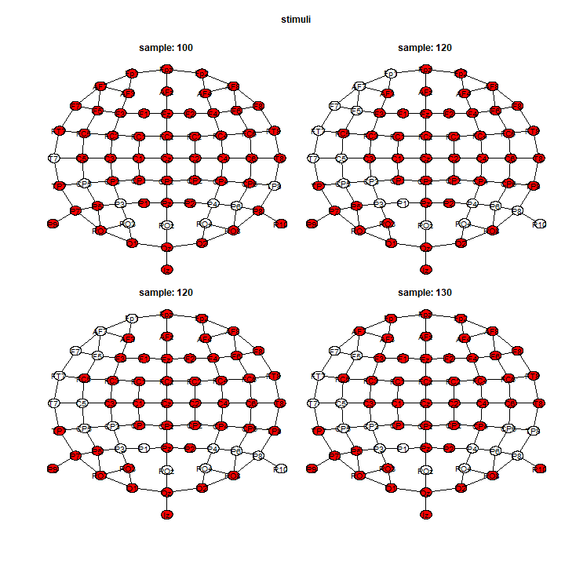

TFCE in permuco4brain
The threshold-free cluster-enhancement (Smith and Nichols 2009) (or TFCE) is a transformation of the statistical signal or map. After running the test for all voxels (samples \(\times\) channels), the TFCE transforms the observed statistic \(T_i\) for the voxel \(i\) using:
\[ \text{TFCE}(i) = \int_{h=0}^{T_i} e_i(h)^E h^H \text{d} h. \]
The TFCE does an integral over all the thresholds \(h\). The function \(e_i(h)\) is called the extend of the cluster created by the threshold \(h\) and represents the number of test/voxel in that cluster. In addition, the parameters \(E\) and \(H\) are set a priori and controls the influence of the extend and height on the TFCE. The \(p\)-value for the voxel \(i\) is computed by comparing its \(\text{TFCE}(i)\) with the null distribution of the TFCE. For each permuted signal \(T_i^\ast\), we keep the maximal value over the whole signal \(\max_i\left[\text{TFCE}^*(i) \right]\) for the null distribution of the TFCE.
In permuco4brain, we implement the suggestion from Pernet et al. (2015) and Smith and Nichols (2009) to use \(E<1\). Hence, the default values are \(E = 0.5\) and, for a F statistic, \(H = 1\) and, for a \(t\) statistic, \(H = 2\).
Moreover, by default in permuco4brain, the integral is estimated using ndh = 500 steps. More precisely, the maximal over all statistics, ( all samples and all permutations) is equally divided into ndh = 500 values for the \(h\)’s. All the default arguments for the TFCE can be changed by adding the arguments E = ..., H = ... or ndh = ... in the brainperm() function.
Finally, the threshold-free cluster-enhancement (Smith and Nichols 2009) (or TFCE) is performed simply by specifying the argument multcomp = "tfce in the brainperm(). However, the TFCE uses more computational resources than the default cluster-mass test (Maris and Oostenveld 2007) and it must be consider before running the function.
Running the TFCE
First, we activate the package permuco4brain and future (Bengtsson 2020)
Following the vignette, you may have saved the data (signal: a 3D array, graph: an igraph defining the adjacency of the channel and design: a data.frame). We load it using:
load("signal_design_graph.RData")Using future for parallelization, we set \(2000\)M RAM per workers by changing the options:
options(future.globals.maxSize = 2000 * 1024^2)This value should mainly depends on the number of tests/voxels (here \(64\) channels \(\times\) \(411\) times-points \(26304\)) and the number of steps in the approximation of the integral (here \(500\)). Moreover, the RAM per worker \(\times\) the number of worker should not exceed the total RAM of your computer.
Using the plan() function, we parallelize the computation using 6 workers and run the TFCE by simply specifying multcomp = "tfce".
plan(multisession, workers = 6)
tfce <- brainperm(signal ~ action*stimuli*mvpa_c + Error(participant/(action*stimuli)),
data = design, graph = graph, multcomp = "tfce")It should run for 30-40 minutes per effect. Using this formula, there is a total of 7 effects including 3 main effects, 3 double interactions and 1 triple interaction.
Similarly to the cluster-mass test, we produce a heat-map using the image() function:
image(tfce, effect = 2)
Or showing the results distributed in space:

And, we extract the results for all effects, all time-points, all channels, using the summary() function.
tfce_full_table <- summary(tfce, table_type = "full")Finally, the vignette Figure using ggplot2 shows more examples for figures that can be customize for publication.
Reference
Bengtsson, Henrik. 2020. A Unifying Framework for Parallel and Distributed Processing in R Using Futures. https://arxiv.org/abs/2008.00553.
Maris, Eric, and Robert Oostenveld. 2007. “Nonparametric Statistical Testing of EEG- and MEG-Data.” Journal of Neuroscience Methods 164 (1): 177–90. https://doi.org/10.1016/j.jneumeth.2007.03.024.
Pernet, C. R., M. Latinus, T. E. Nichols, and G. A. Rousselet. 2015. “Cluster-Based Computational Methods for Mass Univariate Analyses of Event-Related Brain Potentials/Fields: A Simulation Study.” Journal of Neuroscience Methods 250: 85–93. https://doi.org/10.1016/j.jneumeth.2014.08.003.
Smith, S, and T Nichols. 2009. “Threshold-Free Cluster Enhancement: Addressing Problems of Smoothing, Threshold Dependence and Localisation in Cluster Inference.” NeuroImage 44 (1): 83–98. https://doi.org/10.1016/j.neuroimage.2008.03.061.